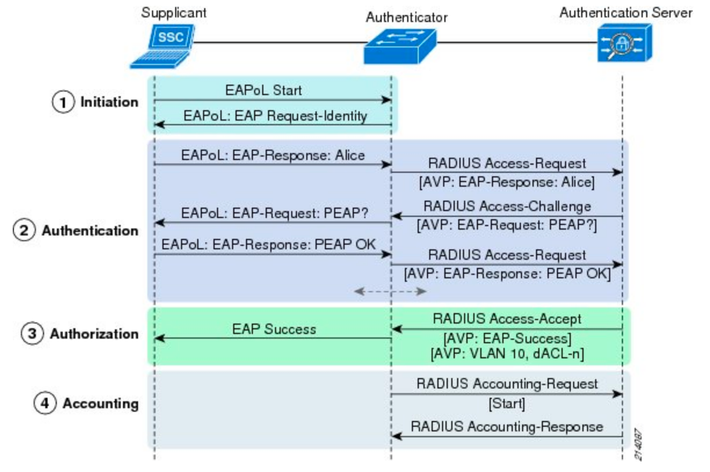

Describing Identity Management, CoA, and Device Compliance
What Is 802.1X?
802.1X allows for layer 2 network access control to be centrally managed.
Supplicant Software that is able to communicate with 802.1X. It is installed on the device trying to gain network access.
Authenticator The Network Access Device (NAD) that the supplicant is connecting to. The authenticator passes information between the supplicant and the authentication server.
Authentication Server Centralized server responsible for authenticating each device on the network, and authorizing what they are allowed to do.

Benefits of 802.1X and Cisco ISE
Users and devices are authenticated and authorized at a central location
No need to update switchports or Wi-Fi passwords
Can apply different settings to different devices
Network Security without 802.X
Port security and Wi-Fi passwords are not scalable
Wi-Fi password changes need to be distributed
Interfaces need to be updated with the correct MAC address
MAC addresses are easily spoofed
Administrative overhead
Device Profiling
Cisco ISE is able to probe devices
Determines what type of device it is
Operating system and version
Smart devices or computers
Can start to use profiling information to make authorization decisions
Device Posturing
NAC agents installed on device collect information:
Antivirus signatures, security patches, registry settings, applications installed, etc.
Unknown
No NAC agent installed or running
VLAN would only allow NAC agent to be installed
Non-Compliant
Device doesn’t meet minimum requirements
VLAN would only allow for updates and correct settings to be installed
Compliant
Device meets minimum requirements
Settings applied would be based off of policy
Bring Your Own Device (BYOD)
Allows network users to bring their personal devices to join the network
Security checks of these devices is done via ISE
Administrators don’t need to manually complete
Can be a tiered approach
Guest Services
Allows visitors to quickly gain access without the need to have a permanent account created
Non-Authenticated
Guest is unknown
Click through a portal to gain access
Authenticated
Guest would register
Can apply different policies to different types of guests
Long-term Contractor VS. Daily Visitor
Utilize Central Web Server
Different EAP Types
Native EAP Passes information immediately
Tunneled EAP Forms an outer tunnel, then uses a Native EAP method as the inner EAP tunnel
Native EAP Types
EAP-MD5
Uses MD5 hash to pass credentials and other sensitive information.
EAP-TLS
Uses certificates on both supplicant and authentication server to establish TLS tunnel. Both sides of tunnel are able to authenticate each other.
EAP-MSCHAPV2
Uses Microsoft’s implementation of CHAP to pass Active Directory credentials.
EAP-GTC
Similar to EAP-MSCHAPv2, but allows authentication with any identity store not just Active Directory.
Both EAP-MSCHAPv2 and EAP-GTC need to be inside of a tunneled EAP protocol to work with Cisco ISE.
Two Different EAP Tunnels
Protected EAP (PEAP)
Created by Microsoft
Creates a TLS tunnel only using the authentication server’s certificate
Commonly used with EAP-MSCHAPV2 as the inner tunnel
Can also be used with EAP-TLS or EAP-GTC,
EAP-FAST
Created by Cisco
Allows for faster wireless roaming between access points. Uses Protected Access Cookies (PACs)
Creates a TLS tunnel only using the authentication server’s certificate
EAP-MSCHAPV2 is a popular inner protocol
EAP-GTC can be used to connect to non-Microsoft identity stores
EAP-TLS is popular because it allows for EAP Chaining
EAP chaining is where both the device and user credentials are being passed at the same time
MAC Authentication Bypass & WebAuth
Uses MAC Address to authenticate - must be added to identity store using ISE
No supplicant - EAPol sent every 30sec per 3 attempts to see if device is 802.1x capable
Authenticator assumes that device doesn’t support 802.1x and puts MAC Address in RADIUS Access-Request message
Drawbacks of MAB
Weaker posture and requires more administrative overhead
Each MAC address has to be in ISE
Not difficult for an attacker to spoof the MAC address of a legitimate device
Web Authentication (WebAuth)
Local WebAuth (LWA) and Central WebAuth (CWA)
Allows user to enter username and password to provide identification
Additional policies can assigned based off of the identification
LWA Versions
Local WebAuth |
Local WebAuth with a Centralized Portal |
|---|---|
Portal hosted on the authenticator |
Authenticator redirects user to central server to enter credentials |
Authenticator generates RADIUS Access-Request message containing username and password |
Portal sends credentials back to authenticator using either HTTP Post or hidden I-frame |
Authenticator then generates RADIUS Access-Request message containing username and password |
|
The authenticator is generating the RADIUS Access-Request message |
CWA Process
Device without a supplicant connects to the network
802.1X times out, authenticator generates a MAB Access-Request message
ISE responds with RADIUS Message
Within RADIUS messages is a URL Redirection to portal located on ISE
User enters credentials, and they are stored in ISE and tied to the MAB session
ISE issues a CoA reauth message, causing a new MAB request to be sent
MAB request contains the same session ID as the first request
ISE associates new MAB request to the user’s credentials that were previously entered
ISE now has all information needed to perform policy lookup and issue final authorization
Introduction to Cisco TrustSec
Tag devices based on their business purpose
All traffic from the device will include this tag
Use Security/Scalable Group Tag (SGT)
Policies can then be created to shape traffic between devices with different SGTs
TrustSec Benefits
Keeping up with ACLs can be administratively cumbersome
IP space for each scenario would need to be carved out
ACLs would need to be created accordingly to match each scenario
TrustSec allows for devices to have the same SGT regardless of where they are
Policies would be configured centrally, and dynamically pushed to all network devices in the network
Configured in a matrix, so it is easy to see which SGTs do or don’t have access to each other